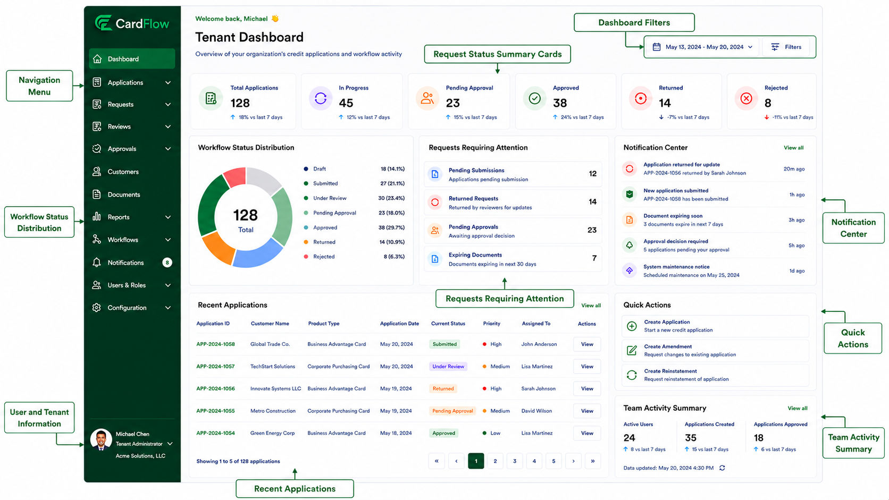

Dashboard Overview
The Dashboard serves as the primary workspace in the CardFlow Credit Origination Platform, providing users with visibility into application activity, workflow status, pending actions, notifications, and operational metrics. Dashboard content may vary based on assigned user roles and permissions.
Dashboard Components
The dashboard is organized into several functional areas that provide quick access to workflow information and commonly used actions.
Key dashboard components include:
- Navigation Menu
- User and Tenant Information
- Dashboard Filters
- Request Status Summary Cards
- Workflow Status Distribution
- Requests Requiring Attention
- Notification Center
- Recent Applications
- Quick Actions
- Team Activity Summary

Tenant Dashboard (Annotated)Navigation Menu
Located on the left side of the screen and provides access to the platform's primary functional areas.
Navigation Menu
| Navigation Menu | Description |
|---|---|
| Dashboard | Provides an overview of application activity, workflow status, notifications, and pending actions. |
| Applications | Allows users to create, view, and manage credit applications throughout their lifecycle. |
| Requests | Displays submitted application, amendment, and reinstatement requests for tracking and processing. |
| Reviews | Provides access to requests awaiting validation, assessment, or review activities. |
| Approvals | Displays requests requiring approval decisions and approval workflow actions. |
| Customers | Maintains customer information associated with credit applications and requests. |
| Documents | Stores and manages supporting documents uploaded as part of workflow requests. |
| Reports | Provides access to operational reports, workflow metrics, and application statistics. |
| Workflows | Displays workflow definitions, request progress, and status tracking information. |
| Notifications | Displays workflow-generated alerts, reminders, and system notifications. |
| Users & Roles | Manages user accounts, role assignments, and access permissions. |
| Configuration | Maintains tenant-specific settings, workflow rules, approval matrices, and system parameters. |
User and Tenant Information
User and Tenant Information displays:
- Logged-in user information
- Tenant/organization name
- User profile access
Dashboard Filters
Filters are used to adjust the displayed metrics and reporting period. Provides:
- Date range selection
- Dashboard filtering options
Request Status Summary Cards
Request Status Summary Cards allows users to quickly assess overall workflow activity, and provides high-level workflow metrics: - Total Applications - In Progress - Pending Approval - Approved - Returned - Rejected
Workflow Status Distribution
Workflow Status Distribution provides visibility into workflow progression and workload distribution. This dashboard component displays:
- Visual breakdown of requests by status
- Percentage distribution
- Overall request volume
Requests Requiring Attention
Requests Requiring Attention helps users prioritize pending work and highlights items requiring action:
- Pending Submissions
- Returned Requests
- Pending Approvals
- Expiring Documents
Notification Center
Notification Center provides visibility into recent platform activity, and displays workflow-generated alerts such as:
- Application submissions
- Returned requests
- Approval requests
- Document expiration notices
- System announcements
Recent Applications
Recent Applications allows users to quickly access active requests. It displays a list of recently created or updated applications, including:
- Application ID
- Customer Name
- Product Type
- Application Date
- Current Status
- Priority
- Assigned User
Quick Actions
Quick Actions allows users to initiate common workflow activities, and provides shortcuts to frequently used functions:
- Create Application
- Create Amendment
- Create Reinstatement
Team Activity Summary
Team Activity Summary provides a summary of organizational activity. It displays operational metrics such as:
- Active Users
- Applications Created
- Applications Approved